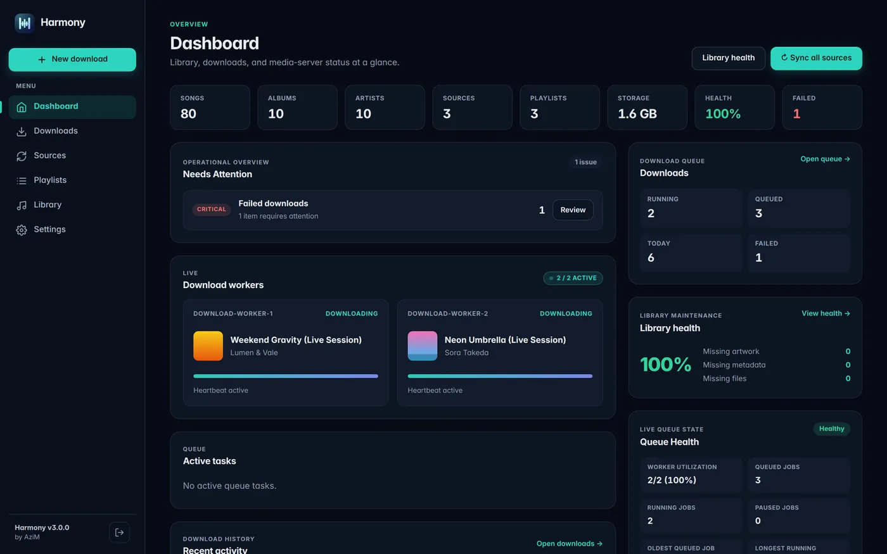
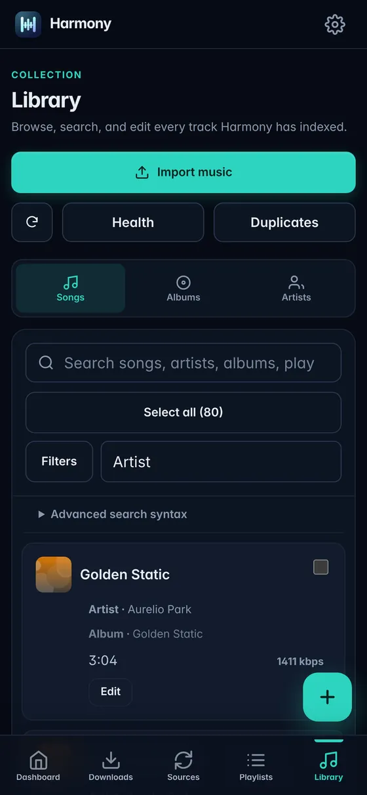
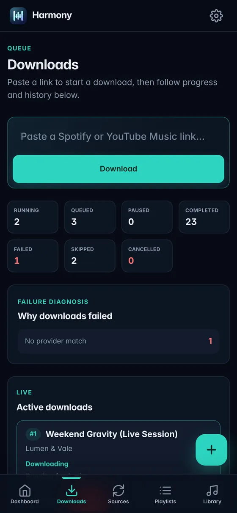
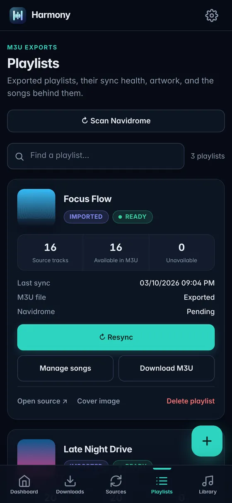

Exact-match downloads
Every file is checked for artist, title, version and duration before import. Live, remix, sped-up and cover substitutes are rejected.
Harmony is a self-hosted music manager. It syncs your Spotify and YouTube Music playlists, downloads only the songs you're missing, and keeps a clean, tagged library ready for Navidrome.
Why Harmony exists
The same song shows up in dozens of playlists, and most downloaders grab it every single time. Harmony remembers what's already in your library, downloads only what's missing, and refuses a remix or karaoke version when you asked for the original.
Features
Every file is checked for artist, title, version and duration before import. Live, remix, sped-up and cover substitutes are rejected.
Follow Spotify and public YouTube Music playlists as Sources. Harmony checks them hourly to weekly and fetches only new songs.
Clean Artist/Album folders and order-preserving M3U playlists, with a Navidrome rescan after every change.
Search titles, artists, albums, genres, ISRCs and MusicBrainz IDs. Sort and filter by bitrate, year, codec or missing artwork.
Fix tags by hand or pull them from MusicBrainz, with cover art from the Cover Art Archive. You review every change before it's saved.
Upload MP3, FLAC, M4A, Ogg or Opus. Harmony groups them by album, flags gaps and conflicts, and never overwrites a file it already has.
Spot missing files, artwork or tags at a glance. Find likely duplicates and resolve them with a preview first.
One responsive app for desktop and mobile that installs as a PWA. Includes light and dark themes and live download progress.
Tour
Real screenshots from Harmony v3, using a demo library of fictional artists.

Queue a download from the couch, check on a sync from the train. The mobile layout has bottom navigation and installs to your home screen.



Install
All you need is Docker. Works on Linux, macOS and Windows (Docker Desktop), and Synology Container Manager.
git clone https://github.com/azimul-kabir/harmony.git
cd harmonycp .env.example .env
# then set WEB_AUTH_PASSWORD in .envPoint MUSIC_HOST_PATH at your existing music folder if you have one.
docker compose up -d --buildOpen http://localhost:8080 and sign in as admin.
Prefer a prebuilt image? docker pull ghcr.io/azimul-kabir/harmony:v3.1.0 (linux/amd64).
For everything else, see the configuration guide.
FAQ
No. Harmony gets, organizes and maintains your files. Playback is left to Navidrome or any media server that reads folders and M3U playlists. Pair it with a Subsonic client like Symfonium (Android), Amperfy (iOS) or Feishin (desktop).
No. Spotify credentials are optional and only needed if you explicitly turn on the official metadata API.
It stays marked as unavailable. Harmony won't quietly fill the gap with a live version, remix or cover just to make a playlist look complete.
Harmony indexes what's there and uses it to skip downloads you don't need. It never replaces an existing file automatically, and every destructive action asks you to confirm a preview first.
The published image targets linux/amd64. On ARM hosts and Apple Silicon Macs, build locally with docker compose up -d --build.
Under the hood
A single container with a single SQLite file and no external services to run. The web UI streams live progress over Server-Sent Events.
Read the architecture notes →